RISC-V Trap Exceptions¶
Mi-V HAL Exit codes¶
If UART displays message such as these:
Progam has exited with code:0x00000003 (got into a trap exception)
It means that it reached to a unhandled exception and decided to stop the execution voluntary as it could cause unexpected behaviors.
This section applies to any other exit codes as well because it deals with unhandled trap exceptions in general. And this section can be used on other trap exceptions as well (they do not have to display a error on the UART). Possibly the code got into unhandled exception/trap state.
Troubleshoot as a trap, the Mi-V HAL exit code meanings are:
| Mi-V HAL Exit code | mcause | Cause of the exit code |
|---|---|---|
| 0x00000001 | 0x00000000 | Instruction address misaligned |
| 0x00000002 | 0x00000001 | Instruction access fault |
| 0x00000003 | 0x00000002 | Illegal instruction |
| 0x00000004 | 0x00000003 | Breakpoint |
| 0x00000005 | 0x00000004 | Load address misaligned |
| 0x00000006 | 0x00000005 | Load access fault |
| 0x00000007 | 0x00000006 | Store/AMO address misaligned |
| 0x00000008 | 0x00000007 | Store/AMO access fault |
| 0x00000009 | 0x00000008 | Environment call from U-mode |
| 0x0000000A | 0x00000009 | Environment call from S-mode |
| 0x0000000C | 0x0000000B | Environment call from M-mode |
| 0x0000000D | 0x0000000C | Instruction page fault |
| 0x0000000E | 0x0000000D | Load page fault |
| 0x00000010 | 0x0000000F | Store/AMO page fault |
Note
The exit code is the mcause register value from RISC-V Privilege Specification plus literal 1:
exit_code = mcause + 1
mcause = exit_code - 1
The exit code table above can be used to troubleshoot mcause values as well, just subtract 1 from the exit_code value.
For full information refer to the draft RISC-V Privileged ISA Specification:
https://riscv.org/technical/specifications/privileged-isa/
Get the value of mepc CSR register, it points to memory where the trap happened. Create breakpoint on this location. Single-step (if needed) to the moment right before the trap happens, note the current state of the CPU, then let the trap happen and get values from the following CSRs: mcause, mip, mie, mtval/mbadaddr, mtvec, mepc, mscratch and mstatus.
Note
When asking for assistance, all these CSRs can give vital information to troubleshoot your problem, do not ask for trap troubleshooting help without supplying this vital information!
CSRs relevant to troubleshooting¶
Our Mi-V verbose trap handler when running Debug build (Release builds do have it disabled) should show the values as local variables in the bottom right corner (however it’s not the only method how to fetch them):
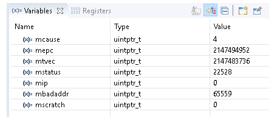
Note
Converting these values to HEX should give more meaningful representation:
These CSRs have the following meanings which should help troubleshoot the cause of why the exception happened:
mcause¶
Should be the same as Mi-V HAL exit code - 1, if it’s not then different trap happened in middle of the trap debug session.
mepc¶
Is the value of Program Counter at the moment when the exception happened (address to code which caused the trap).
mtval/mbadaddr¶
Depending on the assembler version the name of this CSR might be either mtval or mbadaddr. In the current SoftConsole v2021.3 these can be freely interchanged, however the mtval is the newer correct name. If the exit code is 1,2, 5, 6, 7, 8, 0xE or 0x10 (mcause 0,1,4,5,6,7,0xD,0xF) then this CSR points to the memory address which caused this fault. If the exit code is 3 (mcause=2) then this CSR contains the opcode of the instruction which triggered the trap. Together with the exit code (mcause+1) and mepc this can point to what happened and where it happened.
Note
mcause and exit code are almost identical except the exit code is offset by 1.
mip¶
Displays any pending interrupts.
mie¶
Displays what interrupts are enabled.
mtvec¶
Is trap handler vector, address where to jump when the trap happens.
mscratch¶
Temporary values, sometimes it can hold value of the A0 register which is used for arguments passing or return values from the functions.
mstatus¶
Can contain global interrupt enable bit but many other flags (RV64/RV128):
Note
Depending on the application and the problem, but typically the most useful and important CSRs are mcause, mtval/mbadaddr and mepc. Therefore, when troubleshooting a trap issue these 3 CSRs should be addressed first as they can give very good picture what happened and why.
Typical causes of mcause==2¶
Just few of possible situations and causes. Often this is caused by non matching SW and HW (using wrong extensions, or using more memory than target has), or SW bugs (overflows). Knowing how to read code listing (.lst file) and being able to read CSR values is cruitial in the troubleshooting. Often the symptoms and cause are not in the same place, unhandled trap exception happens after the damage was done and user needs to traverse back the callstack what caused it. Often placing breakpoints to the aseembly just before the issue then single stepping and verifying values of stack and registers can pin point to the real cause of the problem.
mtvalopcode of valid instruction,mepcpointing to valid location in the code. Check if the instruction is supported by HW. Can be caused by enabling F or C extensions in the project settings while running on HW which can’t execute these instructions.mepcpointing which should be valid range of memory, butmtvalcontains 0s or 1s. Your target might have less memory than your software, check your linker scripts that they match your HW. Check the section on shrinking the application and on the misleading use of ‘word’ in the Libero GUI. In case of having half of the memory than expected and using linker script with stack pointing to the end of the RAM and depending on the application it might cause issues with stacks even before it will get to executing outside the region, it might different symptoms. The issue might play out differently depending on the linker script, for example if the application is running from eNVM and have data in SRAM (and various things can happen if there is not enough eNVM or SRAM). However corrupting stack no matter what caused it, often corrupts RA (return address) register, which then causes wrong jump and issue mentioned below.mepcpointing to obscure location which for sure is not where valid code resides. Can be caused by SW bug corrupting a stack in a function can cause odd jumps. Inside a function a buffer overflow, heap overflow or writing to a wrong pointer can cause corrupting stack, the return address from the function is store in the stack. Ending the function might then lead jumping to ad-hoc locations and then failing on invalid opcode (if that unimplemented memory contains 0s or 1s).
Note
If the mtval opcode of the instruction is full of zeroes or ones, then that indicates the code went executing in a wrong region of memory. Troubleshoot why it might have jumped there, corrupted RA return pointer in a stack, stack getting overwritten by buffer overflow or some other SW bug. Design not matching the SW is frequent cause, for example having non-matching linker script and using more memory than your target really has, see:
If mtval is valid opcode and mepc valid range, then open the listing file (.lst) and search for mepc address, this should point a specific instruction, validate if the instruction is valid. If it has compressed syntax (instructions have c. prefix and the opcodes are only 16-bit), then check if your HW has support for the C extension and if the project settings have correctly configured the CPU/arch/ABI. A similar situation is with F and D floating-point extensions. The listing file will show symbol to which C function the instructions belongs and opening the function from the C editor might reveal a potential issue or narrow down the scope of potential causes. It is easier to ask for assistance when the possible causes are narrowed down.
Troubleshooting flow for mcause==2¶
![digraph {
graph [bgcolor=transparent]
node [fontname="Handlee" shape=rect]
edge [fontname="Handlee"]
start [ style=filled fillcolor="#FFECCC" color="#FFE3B3" label="mcause==2"]
opcode [ style=filled fillcolor="#EAF7DA" color="#B9E584" label="Is mtval full\nof 0s or 1s?" shape=diamond]
opcodeYes [ style=filled fillcolor="#D4E2F9" color="#9CBDF2" label="CPU went executing a\nwrong region of memory\n(not initialized or not implemented)"]
mepc1 [ style=filled fillcolor="#D4E2F9" color="#9CBDF2" label="mepc is pointing to\nmemory address where\nthe problem occurred"]
rangeValid [ style=filled fillcolor="#EAF7DA" color="#B9E584" label="Is the mepc\nin a valid\nmemory range?" shape=diamond]
rangeNo [ style=filled fillcolor="#E5D4EB" color="#C49ED2" label="Not implemneted memory.\nWhat made it to jumped there?\nSee the content of the call stack.\nCheck target memory size matching linker script"]
rangeYes [ style=filled fillcolor="#E5D4EB" color="#C49ED2" label="Not initialized memory.\nCheck for SW bugs:\nbuffer/stack overflows...\nCheck for Libero design:\nLibero's word is 16-bit"]
mepc2 [ style=filled fillcolor="#D4E2F9" color="#9CBDF2" label="mepc is pointing to\nmemory address where\nthe problem occurred"]
listing [ style=filled fillcolor="#D4E2F9" color="#9CBDF2" label="Open .lst and find that address"]
validIns [ style=filled fillcolor="#EAF7DA" color="#B9E584" label="Is the instruction\na valid opcode?" shape=diamond]
validInsYes [ style=filled fillcolor="#E5D4EB" color="#C49ED2" label="HW might not match SW.\nCheck C, F and other extensions.\nDoes the HW is supporting them?"]
validInsNo [ style=filled fillcolor="#E5D4EB" color="#C49ED2" label="Unlikely a toolchain bug.\nPossibly any other cause,\camouflaged as a toolchain bug.\nDid any SW/HW bug cause to\n jump in a wrong part of the code?"]
start -> opcode
opcode -> opcodeYes [label="Yes"]
opcodeYes -> mepc1
mepc1 -> rangeValid
rangeValid -> rangeYes [label="Yes"]
rangeValid -> rangeNo [label="No"]
opcode -> mepc2 [label="No"]
mepc2 -> listing
listing -> validIns
validIns -> validInsYes [label="Yes"]
validIns -> validInsNo [label="No"]
{
rank=same;
opcodeYes; opcode; start
}
}](../_images/graphviz-a2801c224efb439f87b1431dbc8952fc1de5ba02.png)
Real-life example of mcause==2 on a non-F target¶
Application halted in a trap handler:
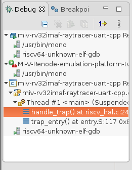
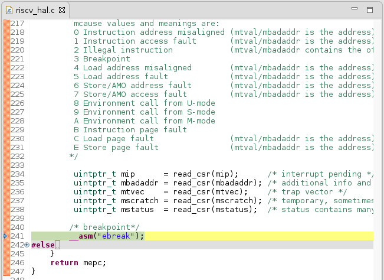
The local variable tab should contain the content of the CSRs:
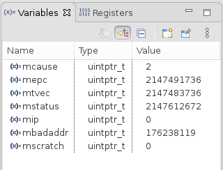
Usually the CSRs are most useful when they are formatted to the hex format:
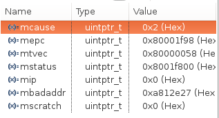
The mcause CSR is 2, the table below shows that it means a Illegal instruction:
| Mi-V HAL Exit code | mcause | Cause of the exit code |
|---|---|---|
| 0x00000001 | 0x00000000 | Instruction address misaligned |
| 0x00000002 | 0x00000001 | Instruction access fault |
| 0x00000003 | 0x00000002 | Illegal instruction |
| 0x00000004 | 0x00000003 | Breakpoint |
| 0x00000005 | 0x00000004 | Load address misaligned |
| 0x00000006 | 0x00000005 | Load access fault |
| 0x00000007 | 0x00000006 | Store/AMO address misaligned |
| 0x00000008 | 0x00000007 | Store/AMO access fault |
| 0x00000009 | 0x00000008 | Environment call from U-mode |
| 0x0000000A | 0x00000009 | Environment call from S-mode |
| 0x0000000C | 0x0000000B | Environment call from M-mode |
| 0x0000000D | 0x0000000C | Instruction page fault |
| 0x0000000E | 0x0000000D | Load page fault |
| 0x00000010 | 0x0000000F | Store/AMO page fault |
The mepc CSR points to the memory location where this exception happened 0x80001f98:
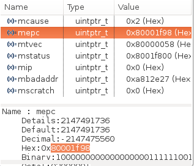
Note
Note the value of the mbadaddr CSR which will be mentioned later below.
Find and open the listing lst file:
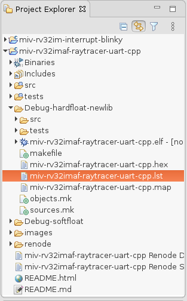
Within the listing file search for the address 80001f98 (Note: the 0x prefix is removed):
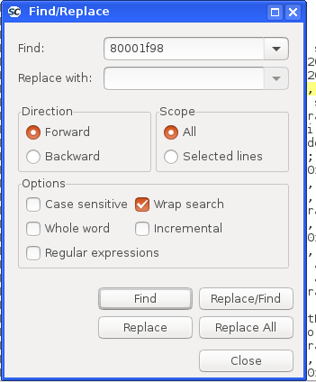
And it found the assembly line where the exception happened and it’s the fsw fs0,188(sp) instruction:
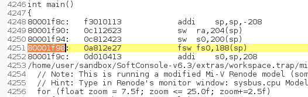
Note
When mcause CSR is 2 then the content of the mbadaddr CSR is exactly the opcode 0xa812e27 of the fsw fs0,188(sp) instruction. And therefore it’s possible to decode the instruction without having access to the listing file.
Looking at the RISC-V reference card shows that the fsw fs0,188(sp) belongs to the floating-point instructions of the F extension:
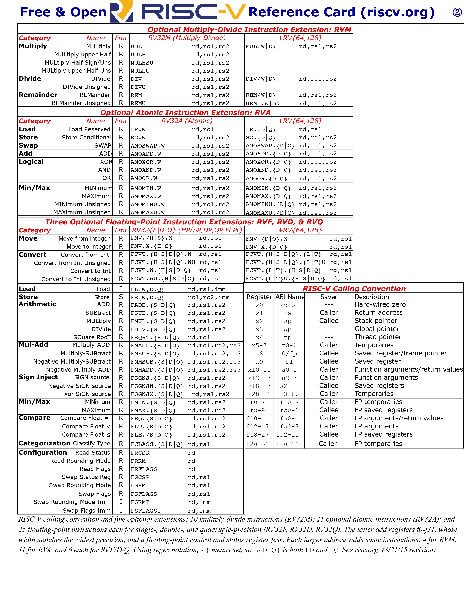 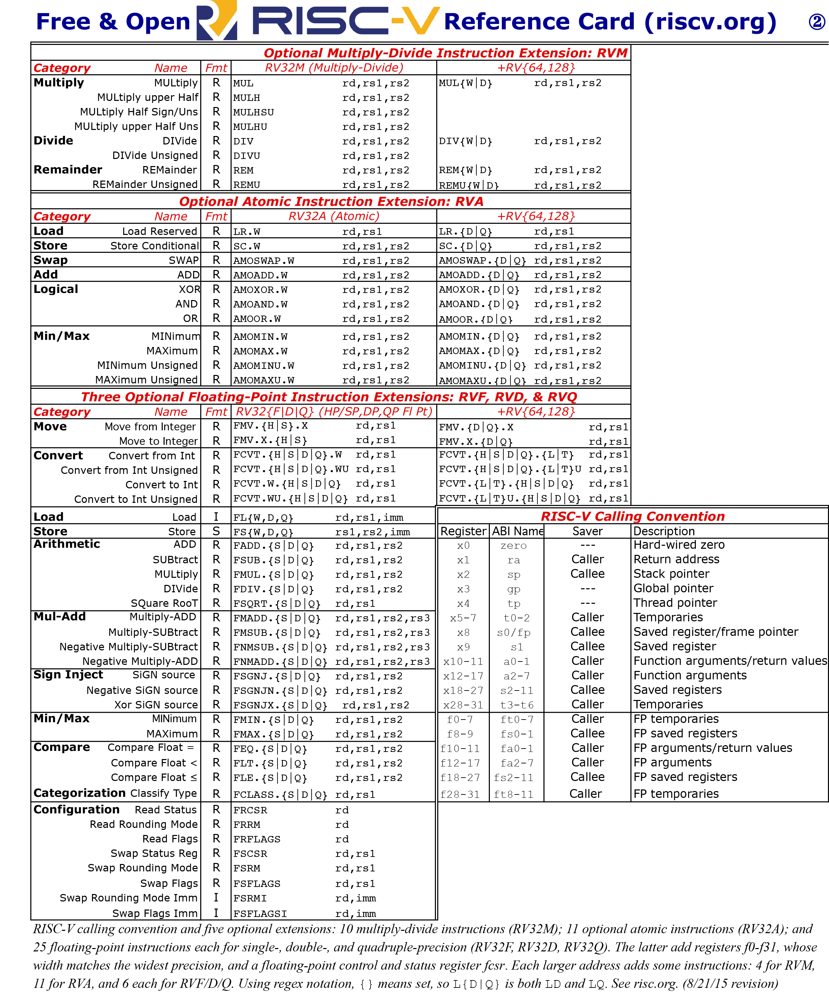
These steps can be used on real HW, however when using Renode as a target, then it might sometimes give hints to the user as well:
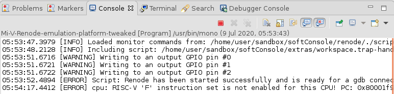
In this example it means that the application is using floating-point instructions (F extension) on a target that doesn’t support it.
This issue can be solved by any of the following:
Remove the floating-point math and replace it with fixed-point arithmetic (if that is viable)
Switch to soft-float implementation, this will increase the code size and decrease the performance significantly as all IEEE754 functionality will be emulated in software. To switch to soft-float both
Floating pointandFloating point ABIhave to be set tononein the following:
Switch to a target that has hardware
Fsupport.
Typical causes of mcause==0,4 or 6¶
When mcause==0, 4, or 6, then this might indicate misaligned address access, the mtval/mbadaddr show the address itself (if it’s not aligned to 32-bit alignment then it’s misaligned) and mepc should point to the location in the code where this misalignment happened, evaluate the listing file to confirm the issue. Double-check project settings: Use strict alignment If the target is Renode, then it is possible to use symbols to resolve the addresses such as MEPC which can sometimes help
troubleshoot a trap without even opening the listing file, see Symbols and simple trace functionality
See: Use strict alignment